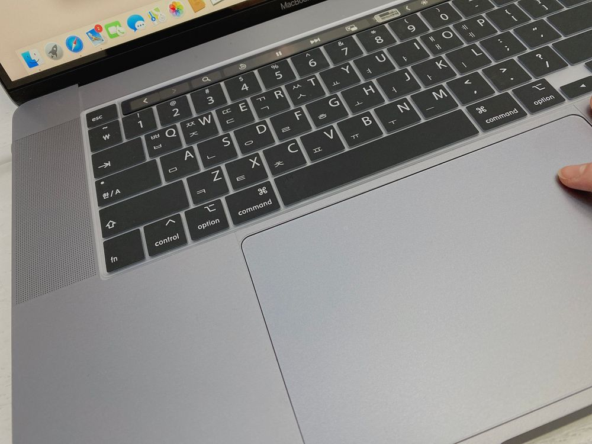
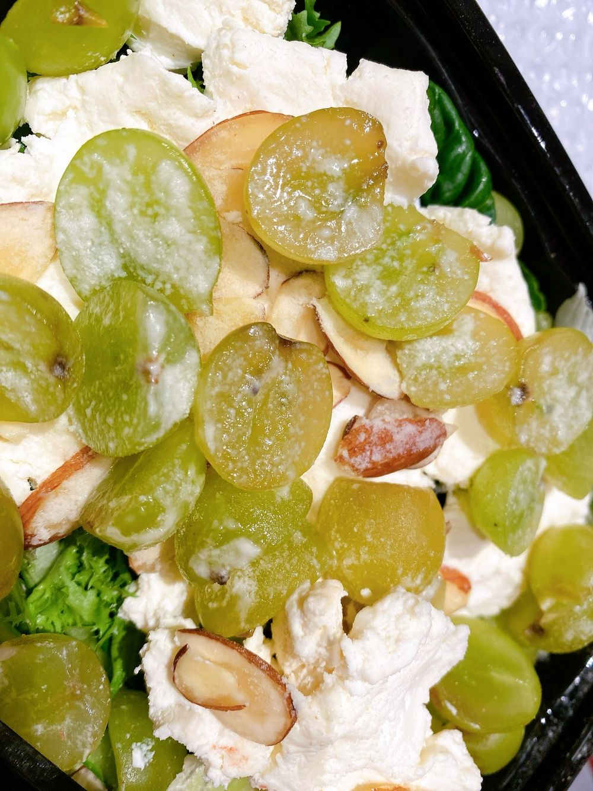

こんばんは🌝
ひいだよ🍓

スケジュール終わって運動してきて
今から見たい動画見ようかなって思って
パソコン開いた〜〜💻
だけどその前にメール打とうと思って
今雰囲気のいい洋楽の曲かけて打ってるよ💨
音楽ってやっぱりいいねえ😊
そういえばそろそろ頭が
プリンになってきたよ🍮
ハイタッチ会のときから
そろそろ黒くなってきたな〜って画面に映る
自分を見て思ってたんだけど…
でも頻繁にブリーチすると
またヒトミが増えるから…🙄
耐えられるところまで耐えようと思うけど。。
そろそろしなきゃかも😶笑
ていうか「たえる」っていう漢字
「耐える」と「堪える」どっちが合ってる？
ひい漢字の勉強好きだから
こういうのめっちゃ気になる💭
自分で調べろって感じかもだけど
이호も知っておくと
今後いいんじゃないかな〜って思って
あえて이호に聞いた❣️ㅋㅋㅋ
気になるからぜひ教えて🤗
ではまたっ
이호 좋아하는 치킨잡 알려줘서 고마워ㅎㅎㅎ
보니까 내가 아직 안 먹어본 치킨도 많더라!!!
항상 같은 가게에서만 시키니까
다음엔 다른 곳에서도 시켜봐야겠다🍗🍗🍗
그리고 TMI 하나 더 알려줄게...
나 오늘 넘어졌다ㅋㅋㅋㅋ
울뻔했어ㅎㅎㅎ
이호도 조심해><
그럼 저녁 맛있게 먹고 푹 쉬어~😊

この前食べたマスカットリコッタチーズサラダが
涙出るほど美味しかった🥺🥗🧀
ばいばーい👋🏻
ひいまる🥟